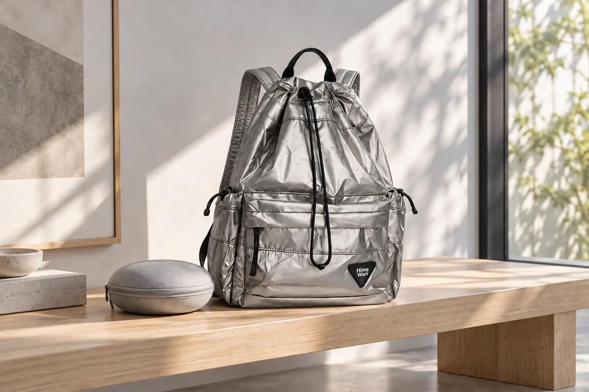

헤드폰을 쓰고 나가는 날에도 케이스 자리는 남겨두기

헤드폰을 쓰고 집을 나서면 가방에는 빈 케이스가 있습니다. 그 빈자리를 다른 물건으로 채우면 목적지에서 헤드폰을 벗었을 때 다시 자리를 만들어야 합니다. 출발한 순간의 짐만 보지 않고 사용을 마친 기기가 돌아오는 모습을 생각해봅니다. 착용하고 이동하는 시간에도 케이스가 맡은 공간은 다음 보관을 위해 남아 있습니다.
준비할 때는 사용하는 헤드폰의 보관 안내를 읽습니다. 어디가 움직이고 어떤 방향으로 놓아야 하는지는 기기를 기준으로 확인합니다. 경첩처럼 보이는 부분이 있다는 이유로 더 접거나 좌우를 억지로 겹치지 않습니다. 케이블과 부속을 분리하는 방법도 실제 안내를 따릅니다. 가방에 맞추기 위해 기기의 원래 보관 모양을 임의로 바꾸지 않습니다.
비교할 모양은 닫힌 케이스
헤드폰 본체만 놓고 본 크기와 케이스에 넣은 묶음은 다를 수 있습니다. 기기를 안내된 방식으로 놓고 케이스를 닫은 모습으로 가방과 비교합니다. 손잡이나 여밈 부품이 돌출돼 있으면 그 부분도 배치에 들어갑니다. 사용하는 케이스가 어떤 보호 조건을 제공하는지는 해당 설명에서 확인하고 외형이 단단해 보인다는 인상으로 대신 판단하지 않습니다.
실제로 넣고 꺼낼 때 다른 짐을 얼마나 움직여야 하는지 봅니다. 책이나 개인 기기 사이에 끼워 넣은 케이스는 들어가도 다시 꺼내기 번거로울 수 있습니다. 큰 물건을 먼저 배치한 뒤 케이스가 놓일 위치와 열리는 방향을 살펴보세요. 가방을 닫으려고 눌러야 한다면 다른 짐을 줄이거나 새로운 운반 방법을 생각할 수 있습니다.
이 글에 소개한 Himawari No.0514 제품 정보는 헤드폰을 함께 들고 외출할 가방을 살펴볼 자료입니다. 케이스를 고른 뒤 실제 입구로 넣고 꺼내는 동작을 비교하세요. 작은 개인 소품과 케이스의 위치를 각각 정하면 목적지에서 벗은 헤드폰을 보관할 순서가 생깁니다. 착용한 상태로 출발했어도 그 자리는 비워두는 편이 준비에 맞습니다.

빈 케이스 안에 다른 소품을 넣어 이동할지 생각할 수도 있습니다. 다만 헤드폰을 다시 넣을 때 그 물건이 어디로 옮겨가야 하는지 정해져 있어야 합니다. 열쇠나 어댑터를 기기 옆에 임의로 합쳐 담기보다 케이스의 보관 안내를 따릅니다. 케이스가 하나의 공간을 차지하는 이유를 유지하면 도착 뒤 새 분류를 할 필요가 줄어듭니다.
착용한 기기가 돌아오는 순간
목적지에서 헤드폰을 벗으면 먼저 정리할 수 있는 자리를 찾습니다. 케이스를 꺼내고 기기의 사용을 마친 뒤 안내된 모양으로 놓습니다. 걷는 동안 한 손으로 접고 지퍼를 여는 동작을 모두 하려 하지 않습니다. 손에 든 기기와 열린 케이스의 위치가 보이는 상태에서 한 단계씩 정리하는 흐름을 준비할 수 있습니다.
케이블을 썼다면 어느 부분이 연결돼 있는지 확인합니다. 기기와 선을 실제 사용 안내에 맞춰 정리하고 케이스를 닫을 때 걸리는 부분이 없는지 봅니다. 분리되지 않는 구성을 임의로 떼지 않으며 무엇을 함께 보관하는지 안내를 읽습니다. 평소처럼 닫혔는지 확인한 뒤 가방의 정한 위치로 돌려놓습니다.
목에 걸어두거나 가방 밖에 매달아둘 계획이라면 사용할 수 있는 방식인지 기기 안내를 확인합니다. 임의의 고리와 손잡이를 보관용으로 생각하지 않습니다. 잠깐 벗었더라도 언제 다시 착용할지와 그동안 어디에 둘지 정해야 합니다. 케이스로 돌아가는 방식이 번거롭다면 왜 어려웠는지 보고 꺼낼 위치나 동작을 바꿀 수 있습니다.
외출 중 새 물건이 생기면 케이스의 위치를 유지할지 다시 봅니다. 출발 때 빈 공간처럼 보였던 곳에 다른 물건을 담았다면 헤드폰을 넣기 전에 정리할 일이 생깁니다. 기기의 보관을 먼저 마치고 새 물건을 별도로 운반할 수도 있습니다. 같은 가방에 모두 들어가야 한다는 조건을 먼저 두지 않으면 선택이 구체적으로 남습니다.
자주 벗는 날의 배치
도착해서만 보관하는 날과 여러 번 꺼내는 날은 필요한 동작이 다릅니다. 짧은 시간마다 케이스를 쓰려면 다른 물건을 옮기는 횟수를 보아야 합니다. 사용하는 실제 구성으로 넣고 꺼내보세요. 책 한 권이나 두꺼운 파우치 때문에 동작이 바뀐다면 작은 물건만 여기저기 옮기기보다 그 큰 묶음과 위치가 겹치는지 살펴봅니다.
가방을 바꾸는 날에는 케이스의 방향도 다시 확인합니다. 이전 가방의 자리를 그대로 기대하지 않고 입구와 다른 소지품을 놓고 봅니다. 케이스를 꺼내기 전에 필요한 지갑이나 열쇠를 찾는 동작도 함께 할 수 있습니다. 자주 쓰는 두 물건이 서로의 길을 막는다면 각각의 위치를 바꾸어 비교합니다.
귀가 후에는 기기의 현재 상태를 보고 관리 안내대로 정리합니다. 케이스도 사용 후 어떻게 둘지 안내를 확인합니다. 밖에서 보관한 상태 그대로 다음 외출에 옮기기 전에 필요한 점검을 합니다. 기기와 부속이 같은 묶음으로 돌아왔는지 알아두면 다음날 케이스가 비었을 때 무엇이 밖에 나와 있는지도 분명합니다.
다음 준비에서는 먼저 헤드폰을 케이스에 놓고 가방에서 돌아갈 자리를 봅니다. 착용하고 출발할 때도 빈 케이스를 준비한 구성 안에 둡니다. 목표는 케이스를 가장 작은 틈에 끼워 넣는 것이 아니라 사용 뒤 같은 자리로 되돌리는 것입니다. 목적지에 도착해 기기를 벗었을 때 다른 짐을 새로 분류하지 않아도 되는 배치를 찾아봅니다.